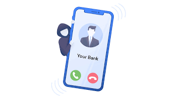

Vishing

Il vishing (o phishing vocale) è una forma di truffa, sempre più diffusa, che utilizza il telefono come strumento per appropriarsi di dati personali - specie di natura bancaria o legati alle carte di credito - e sottrarre poi somme di denaro più o meno ingenti.
Nel caso più frequente, i truffatori (i “visher”) chiedono direttamente di fornire i riferimenti del conto corrente o della carta di credito (come il PIN del bancomat o quello utilizzato per l’Internet banking, il numero della carta, il codice di sicurezza sul retro della carta, i dati dell’OTP cioè della password temporanea per eseguire operazioni sul conto bancario e sulla carta di credito, ecc.).
In altri casi - durante o dopo la finta telefonata di allarme - viene inviato sul cellulare un messaggio con un codice di conferma e viene chiesto alla vittima di leggerlo ad alta voce all’operatore. Tale codice serve in realtà ad autorizzare trasferimenti di denaro a vantaggio dei truffatori, entrati precedentemente in possesso dei dati bancari o della carta di credito.
I truffatori operano anche tramite messaggi (inviati sullo smartphone o via e-mail, o lasciati in segreteria telefonica) per spingere le vittime a richiamare urgentemente determinati numeri, contattati i quali si parla con un operatore o si ascolta un messaggio registrato.
Perche' il vishing e' cosi' pericoloso?
I visher fanno leva sul timore legato ad un rischio incombente per convincere le vittime ad abbassare il livello di prudenza e a reagire d’impulso.
Non sempre i visher si fingono operatori di banche o carte di credito. Ecco un esempio di vishing:
“Crediamo che lei sia rimasta vittima di una truffa durante una transazione con la sua carta di credito... È questo il suo numero di carta? ... ”
“Sì, è il mio numero”.
“Signora mi conferma che questa è la data di scadenza della carta in questione?”
“Vorrei che mi confermasse che Lei è il reale possessore della carta di cui stiamo parlando, mi legga cortesemente il codice di sicurezza di 3 cifre che trova dietro la carta ...”
la truffa si è compiuta.
Un altro esempio:
″Poste Italiane ti regala 100 euro di credito + 10GB Internet se effettui una ricarica di almeno 20 euro sul sito: [URL di sito contraffatto] offerta valida 24 ore”
In tutti i casi descritti, nonostante le differenti modalità di condotta, si tratta del reato di truffa ex articolo 640, primo comma, Codice penale, che prevede la reclusione da 6 mesi a 3 anni e la multa da 51 a 1032 euro per “chiunque, con artifizi o raggiri, inducendo taluno in errore, procura a sé o ad altri un ingiusto profitto con altrui danno” (cosiddetto semplice) ovvero quello di truffa aggravata, di cui al secondo comma dell’articolo 640 del Codice penale, allorquando il fatto sia commesso ingenerando nella persona offesa il timore di un pericolo o l’erroneo convincimento di dover eseguire l’ordine di un’autorità.
Come Difendersi?
istituzioni e aziende chiamano di solito da numeri fissi e comunque con prefissi nazionali: chiamate provenienti, ad esempio, da numeri anonimi, da numeri di cellulare o da prefissi stranieri possono essere considerate anomale e dovrebbero renderci prudenti
meglio diffidare delle chiamate con toni ultimativi o intimidatori, che ad esempio minacciano la chiusura del conto bancario, il blocco della carta di credito o eventuali sanzioni se non si compie subito una certa azione: possono essere subdole strategie per spingere il destinatario a fornire informazioni e dati personali senza rifletterci troppo.
-
Altre metodi di difesa sono i principalmente uguali a quelli del Phishng e del Smishing.
Ricorda che quelle citate in questo sito sono sono alcune delle metodologie utilizzate dai truffatori, questi cassi esaminati o esposti sono casi base, generici e difficilmente incontrabili. Un truffatore esperto non userebbe 'solo' questi casi di esempio, la maniera usata per ricavare i dati puo essere talvolta piu complessa, quindi e necessario essere sempre attenti e seguire le regole di internet.